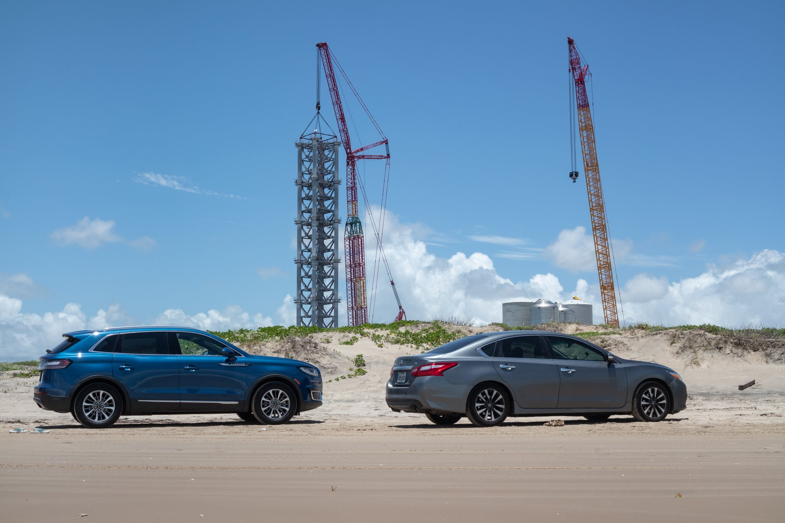
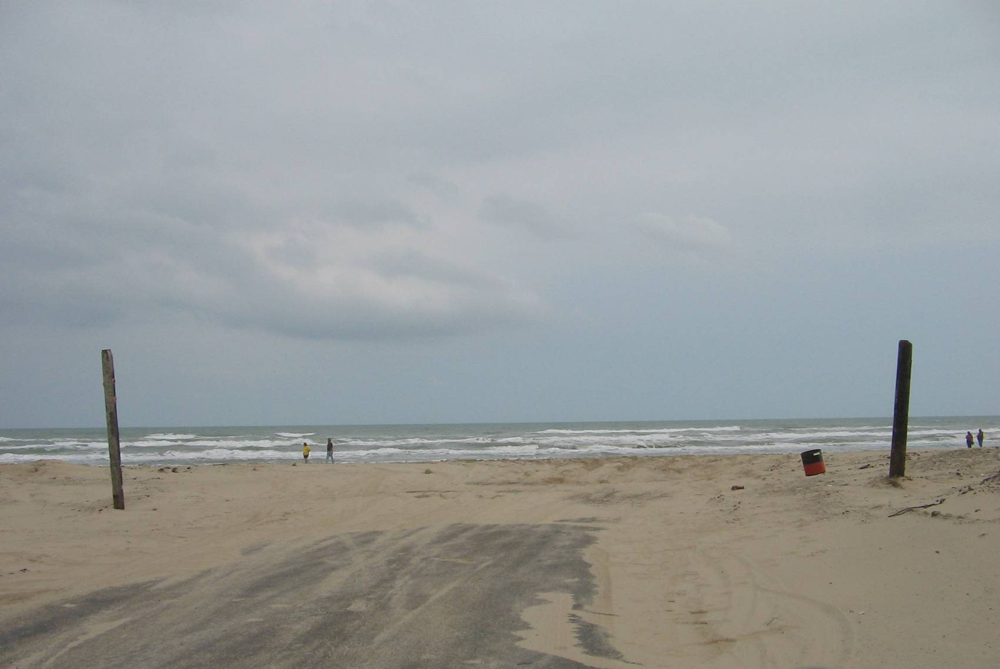

Venerdì 16 ottobre 2026, alle 19:59 ora del Texas (le 2:59 di sabato in Italia), il giornalista Forrest Wilder ha pubblicato su X una frase destinata a far discutere tutto lo Stato: «Il Texas sta valutando di vendere il Boca Chica State Park a Elon Musk». Il suo articolo, uscito in esclusiva sul mensile Texas Monthly, racconta che la Texas Parks and Wildlife Commission, l'organo che governa i parchi statali, aveva messo in una bozza di ordine del giorno la vendita di «1.300 acri» nella contea di Cameron, circa 526 ettari, da discutere in seduta riservata il 5 novembre. Due persone a conoscenza delle discussioni interne hanno confermato che quel terreno è il parco sulla spiaggia che avvolge Starbase, la base di Starship, e che il compratore sarebbe SpaceX.
Che cosa è successo
La bozza dell'ordine del giorno prevedeva di affrontare la vendita nella sessione esecutiva, la parte della riunione che si svolge senza pubblico. Quando Texas Monthly ha chiesto conto della seduta e del ruolo di SpaceX, la portavoce di Texas Parks and Wildlife, Stephanie Garcia, ha risposto con una sola frase: «La Texas Parks and Wildlife Commission non sta valutando la vendita della proprietà di Boca Chica nella sua riunione di novembre». Alle domande successive, sul perché l'ordine del giorno fosse cambiato, sul coinvolgimento di Musk e sul destino della trattativa, non è arrivata risposta. Le stesse fonti hanno spiegato che il tema potrebbe tornare davanti ai nove commissari più avanti.
Restano quindi tre livelli diversi di certezza. È ufficiale che la vendita non sarà discussa nella riunione del 4 e 5 novembre. È documentato, dalla bozza vista dai giornalisti, che qualcuno aveva pensato di metterla in calendario. È riferito da fonti anonime, e non confermato, che il terreno sia proprio il parco e che il compratore sia SpaceX. Non si conoscono prezzo, condizioni, né se si parli di una vendita vera e propria o di uno scambio di terreni.

Che cos'è il Boca Chica State Park
Il parco occupa l'estremo sud della costa texana, dove il Rio Grande sfocia nel Golfo del Messico, a pochi chilometri dal confine con il Messico e a est di Brownsville. È una striscia di dune, lagune salmastre e piane di marea attraversata dalla State Highway 4, l'unica strada che porta al mare e, lungo il percorso, alla base di SpaceX. Texas Parks and Wildlife acquistò il terreno nel 1994 da The Nature Conservancy e fino al 2023 lo diede in gestione allo U.S. Fish and Wildlife Service, che lo amministrava come parte del Lower Rio Grande Valley National Wildlife Refuge. Per chi abita nella valle del Rio Grande è la spiaggia dove si pesca, si campeggia e si guida sulla sabbia; per i naturalisti è un'area delicata, frequentata da uccelli migratori e da specie protette.
Starbase sta letteralmente al centro di questo paesaggio. Il sito di lancio è circondato dal parco, e ogni volta che Starship vola o viene provata la spiaggia e la strada vengono chiuse al pubblico. Dal 2025 il potere di approvare quelle chiusure non è più della contea di Cameron ma della città di Starbase, il comune nato attorno alla base e abitato in gran parte da dipendenti SpaceX: lo ha stabilito una legge statale, la HB 5246, in vigore dal 1° settembre 2025.
Un pezzo alla volta: la terra di Boca Chica
Se la notizia sembra improvvisa, la cronologia degli ultimi anni racconta un'altra storia. Nel marzo 2024 la commissione autorizzò uno scambio: 43 acri sparsi del parco, circa 17 ettari, sarebbero passati a SpaceX in cambio di 477 acri, circa 193 ettari, vicino al Laguna Atascosa National Wildlife Refuge, destinati a un nuovo parco statale. L'agenzia scrisse allora che lo scambio avrebbe consentito la «necessaria espansione delle strutture e delle attività di SpaceX in Texas». Dopo proteste pubbliche e una causa, SpaceX si ritirò dall'accordo.
Nell'agosto 2025 la commissione ha approvato la vendita diretta a SpaceX di quattro piccoli lotti del parco, circa 1,9 acri in tutto, che l'azienda voleva per le case dei dipendenti. Nel giugno 2026 il Fish and Wildlife Service federale ha firmato uno scambio molto più grande: 715 acri del Lower Rio Grande Valley National Wildlife Refuge accanto a Starbase, circa 289 ettari, in cambio di 683 acri di proprietà di SpaceX vicino a Laguna Atascosa. Il 21 settembre un giudice ha respinto la richiesta dei gruppi ambientalisti di bloccarlo, ma la loro causa non è ancora decisa.
| Quando | Operazione | Esito |
|---|---|---|
| Marzo 2024 | Scambio con lo Stato: 43 acri del parco per 477 acri vicino a Laguna Atascosa | Autorizzato, poi abbandonato da SpaceX |
| Giugno 2025 | Legge HB 5246: le chiusure di spiaggia e strada passano dalla contea alla città di Starbase | In vigore dal 1° settembre 2025 |
| Agosto 2025 | Vendita di quattro lotti del parco, circa 1,9 acri, per alloggi | Autorizzata dalla commissione |
| Giugno e settembre 2026 | Scambio federale: 715 acri della riserva per 683 acri di SpaceX | Approvato; il giudice non lo ha sospeso, la causa prosegue |
| Ottobre 2026 | Vendita dell'intero parco, circa 1.300 acri (non confermata) | Tolta dalla riunione di novembre; futuro incerto |
La differenza di scala è evidente. I 1.300 acri sono circa trenta volte i 43 acri dello scambio del 2024 e quasi il doppio dei 715 acri federali. Finora si era trattato di lotti piccoli o di permute che restituivano al pubblico più terra di quanta ne togliessero. Questa volta, se le fonti hanno ragione, a passare di mano sarebbe il parco intero.

Perché proprio adesso: da 25 a 456 lanci
Il tempismo si spiega con i piani di SpaceX per Starbase. Il 14 ottobre la FAA, l'ente federale dell'aviazione, ha aperto la revisione ambientale della richiesta di far volare Starship da Boca Chica fino a 456 volte l'anno, contro i 25 lanci oggi autorizzati. Il piano prevede una prima fase con un massimo di 100 lanci e 200 atterraggi l'anno, a qualsiasi ora e in qualsiasi giorno, e una seconda fase con 456 lanci e 912 atterraggi, perché sia il booster Super Heavy sia la nave Starship tornerebbero alla base. Nulla è ancora approvato: le osservazioni del pubblico sono aperte fino al 30 novembre, con incontri a Brownsville il 17 novembre, online il 18 e a Port Isabel il 19.
Passare da 25 a 456 lanci significa moltiplicare l'attività per più di diciotto volte. Vuol dire più chiusure della spiaggia, più spazio per rampe e impianti, zone di sicurezza più ampie. Avere come vicino un parco pubblico rende ognuna di queste cose più complicata; esserne proprietari la renderebbe molto più semplice.
Le reazioni
Le associazioni ambientaliste hanno reagito subito. «È una cosa che puzza», ha detto Luke Metzger, direttore di Environment Texas, aggiungendo che «sembra davvero brutta» e ricordando che il parco è un ambiente fragile e ospita molte specie minacciate. Environment America, l'organizzazione nazionale collegata, ha lanciato una petizione per chiedere alla commissione di non vendere. Bekah Hinojosa, residente a Brownsville e cofondatrice del South Texas Environmental Justice Network, ha detto che «la terra pubblica non è lì perché qualche miliardario provi a comprarla e a sfruttarla».
Sabato è intervenuto anche Armando Walle, deputato democratico alla Camera del Texas: «Abbiamo approvato il Centennial Parks Fund per ampliare i parchi statali in ogni regione, perché generazioni di famiglie texane possano godersi la natura. Mi opporrei alla vendita del Boca Chica State Park non solo a Elon Musk, ma a chiunque e per qualunque scopo». La vicenda è entrata subito nella campagna elettorale: il governatore Abbott, che nomina i commissari, è candidato alle elezioni del 3 novembre e il Partito democratico texano ha usato la notizia per attaccarlo. Non è un fronte unico, però: nel 2024 la senatrice statale della contea di Cameron, Morgan LaMantia, e la deputata Jane Lopez avevano scritto lettere a sostegno dello scambio con SpaceX.
Che cosa seguire adesso
Una vendita, anche se tornasse in discussione, non potrebbe chiudersi in silenzio. La legge texana sulle riunioni pubbliche consente di discutere a porte chiuse l'acquisto, lo scambio o il valore di un terreno quando una discussione aperta danneggerebbe la trattativa, ma il voto finale deve avvenire in seduta pubblica. E quando nel 2025 la commissione ha venduto i quattro lotti a SpaceX, ha dovuto seguire il capitolo 26 del codice texano su parchi e fauna: avvisi sui giornali locali, un'udienza pubblica e la dichiarazione formale che non esisteva un'alternativa «fattibile e prudente» all'uso di quella terra. Per un intero parco costiero lo stesso esame sarebbe molto più affollato.
Da tenere d'occhio ci sono l'ordine del giorno definitivo della riunione di novembre, un'eventuale risposta di SpaceX o di Musk, la possibilità che l'idea ritorni sotto forma di permuta, come già accaduto in passato, e il calendario della FAA sui 456 lanci. Per SpaceX la terra attorno alla rampa è il vero limite fisico alla crescita di Starbase; per molti texani quella stessa terra è la loro spiaggia. Il prossimo capitolo dirà se la questione verrà decisa in pubblico o dietro una porta chiusa.
Il dossier su Starlink in India passa all'archivio Notizie. Sui piani di volo di Starbase resta disponibile il dossier sulla revisione FAA per 456 lanci l'anno.
Fonti pubbliche e tracce
Ultimo aggiornamento editoriale: 18 ottobre 2026. Nel corpo non si ripete la fonte a ogni frase: le tracce sono raccolte qui. Le citazioni dall'inglese sono traduzioni redazionali.
- Texas Monthly, 16 ottobre 2026: bozza dell'ordine del giorno, fonti sull'acquirente, dichiarazione di Stephanie Garcia, storia del parco, parole di Luke Metzger e Bekah Hinojosa.
- Forrest Wilder su X, 17 ottobre 2026 (ora italiana): «Texas has been considering selling Boca Chica State Park to Elon Musk».
- Texas Monthly su X, 17 ottobre 2026 (ora italiana): le fonti indicano SpaceX come acquirente.
- Armando Walle su X, 17 ottobre 2026: opposizione alla vendita del parco.
- Texas Gazette, 17 ottobre 2026: riepilogo, reazioni, campagna elettorale, lettere di LaMantia e Lopez nel 2024, scambio federale da 715 acri.
- Supercharged Daily, 17 ottobre 2026: cronologia delle operazioni fondiarie, HB 5246, vendita dei lotti del 2025, Open Meetings Act e capitolo 26.
- Environment America, 16 ottobre 2026: petizione contro la vendita.
- KRGV: lo scambio del 2024 e la frase dell'agenzia sulla «necessaria espansione» di SpaceX.
- Rivoluzione Spaziale, dossier FAA Starbase: avviso FAA del 14 ottobre 2026, fasi da 100 e 456 lanci, calendario delle consultazioni.
Fotografie utilizzabili
- Copertina e figure: Wikimedia Commons, licenze CC BY 2.0 e CC BY 3.0; dettagli in
assets_boca_chica_parco/crediti_immagini.md. - Nessuna foto SpaceX o X a credito editoriale in questo dossier: la notizia riguarda il parco e la spiaggia attorno a Starbase, documentati con foto libere scattate sul posto.